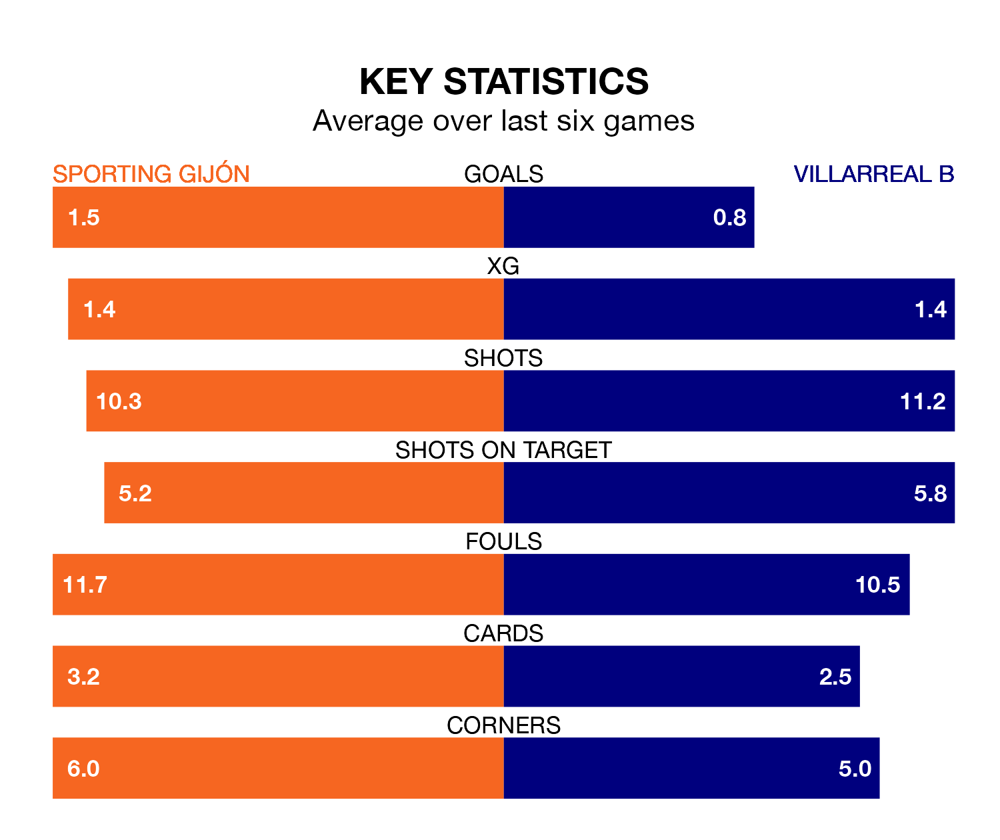

Struggling Villarreal B face Sporting Gijón away at the Estadio Municipal El Molinón on Sunday looking to build on a win in their last league outing.
After securing all three points with a 1-0 victory over Racing Club de Ferrol on April 20, Villarreal B sit bottom of the Segunda División.
They travel to play a Sporting side seventh in the standings, who lost in their last match, 2-1 against Elche CF.
With 33 goals in 36 games so far this season, Villarreal B are scoring at below the league average rate with 0.9 goals per game. And they are conceding more than average, letting in 52 goals at a rate of 1.4 per game.
Sporting, meanwhile, are above average scorers, with 1.2 goals per game, compared to a league average of 1.1. They have conceded 1.0 goal per game.
In Álex Forés Mendoza, the away team have one of the league's sharpest shooters so far this season. He has notched 14 goals in 36 appearances, to sit fourth in the scoring charts.
His goal rate of one every 189 minutes is quicker than that of Gaspar Campos Ansó Fernández, the hosts' top scorer with a goal every 242 minutes, and a total of 10 goals in 34 games.
Sporting are in mixed form in the Segunda División, with three wins and three losses from their last six games.
With two wins and four losses over that period, Villarreal B's form is worse – they have taken six points from 18, compared to Sporting's nine.
In the last three years, Sporting and Villarreal B have played each other on three occasions. Sporting won two of them and Villarreal B one.
Their last meeting was on November 4, when Sporting won 3-0 away.
Updated: 07:59 (UTC), 26/04/24